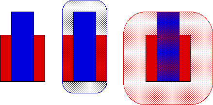
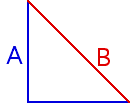

| Suppose A and B are compact subsets of the plane. Then the Hausdorff distance between A and B is |
| h(A, B) = min{ε: A ⊆ Bε and B ⊆ Aε}. |
| For example, suppose A is the red unit square, and
B is the rectangle with base length |
| What is h(A, B)? |
|  |
| We see |
| A is contained in B1/4 and |
| B is contained in A1/2. |
| These are the smallest ε-thickenings that will work: |
| for any ε < 1/4, Bε misses the left and right sides of A, and< |
| for any ε < 1/2, Aε misses the top of B. |
| So h(A, B) = 1/2. (Remember, the same ε must work for both A ⊆ Bε and B ⊆ Aε.) |
| As usual, the only work required in proving h is a metric lies in showing the triangle inequality holds. That is made easier by first proving the lemma |
| (Aε)δ ⊆ A(ε+δ). |
| Exercise Find h(A, B), where A
is the union of the line segments
from |

Return to Convergence of determinisitc IFS.